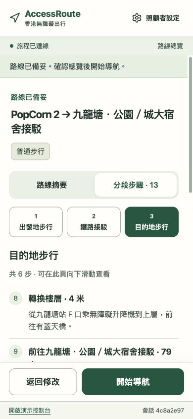
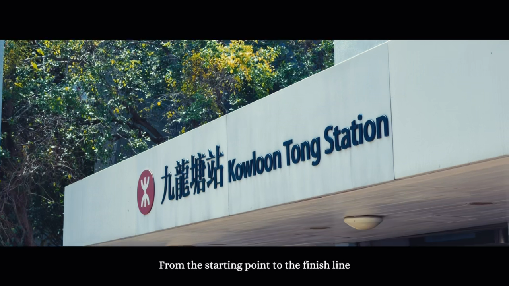

Hong Kong, floor by floor
Accessible routes. Personal journeys.
Routes shaped by your mobility needs, from the first lift to the final street crossing.

PLANNED AROUND YOUR NEEDSTry AccessRoute
Demo and videos
Open the online demo or watch the project in action.
Explore AccessRoute
Explore the project.
Follow a journey, look inside the system, or go straight to the project materials.
01020304
The journey
See the interface, route choices and Kowloon Tong field journey.
The technology
How map data, AI workflows and route planning work together.
The evidence
Explore scene coverage, regression checks and route recovery.
The materials
Product manual, presentation, video and technical references.
A route in Kowloon TongThe Kowloon Tong
The Kowloon Tong
route.
At the footbridge, the journey can continue outdoors or through Festival Walk. Stair access, lift availability and shelter preferences shape the choice.
Follow the route ↗